A conceptual fashion and culture magazine focused on garments, people, and environments shaped by time, utility, and durability.
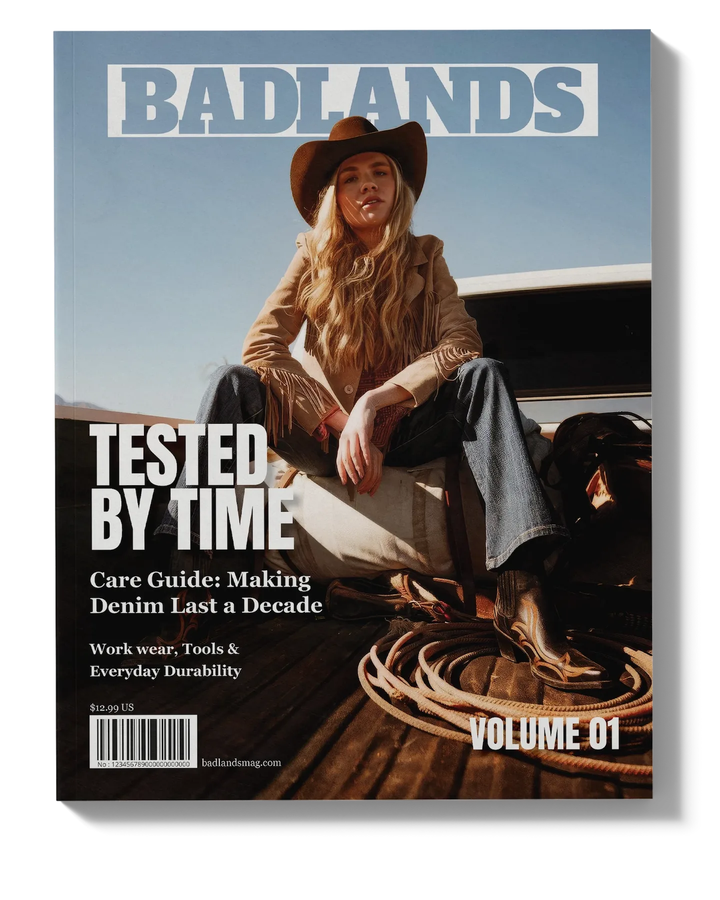
THE PROBLEM
Modern fashion media is driven by fleeting trends. The challenge was to design a publication that documents clothing through a different lens, valuing longevity, function, and personal history over seasonal relevance.
THE SYSTEM
The visual identity utilizes a restrained editorial approach inspired by workwear and utilitarian design. A muted color palette, structured grid, and minimal typography allow the stories and imagery to lead.
THE RESULT
A cohesive brand that feels grounded and timeless. Through documentary-style photography and clear editorial design, Badlands establishes a unique voice in fashion publishing that celebrates craftsmanship.
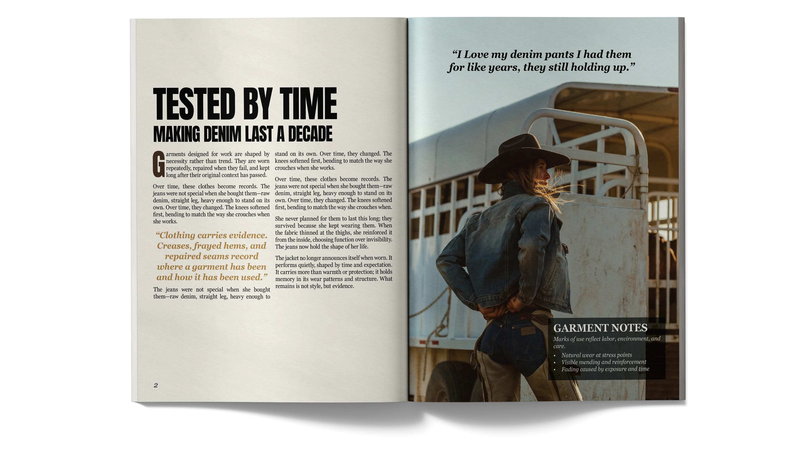
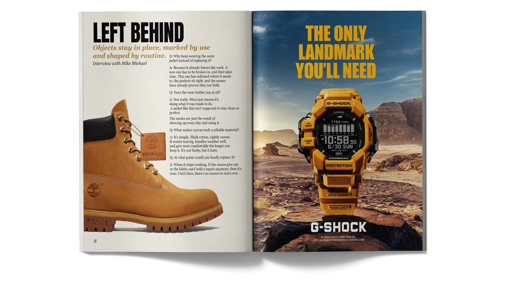
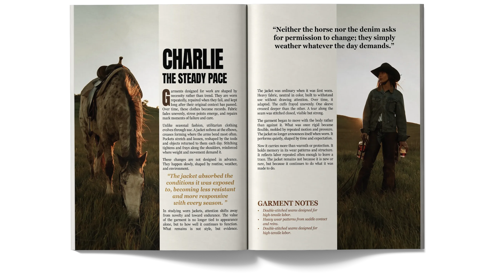
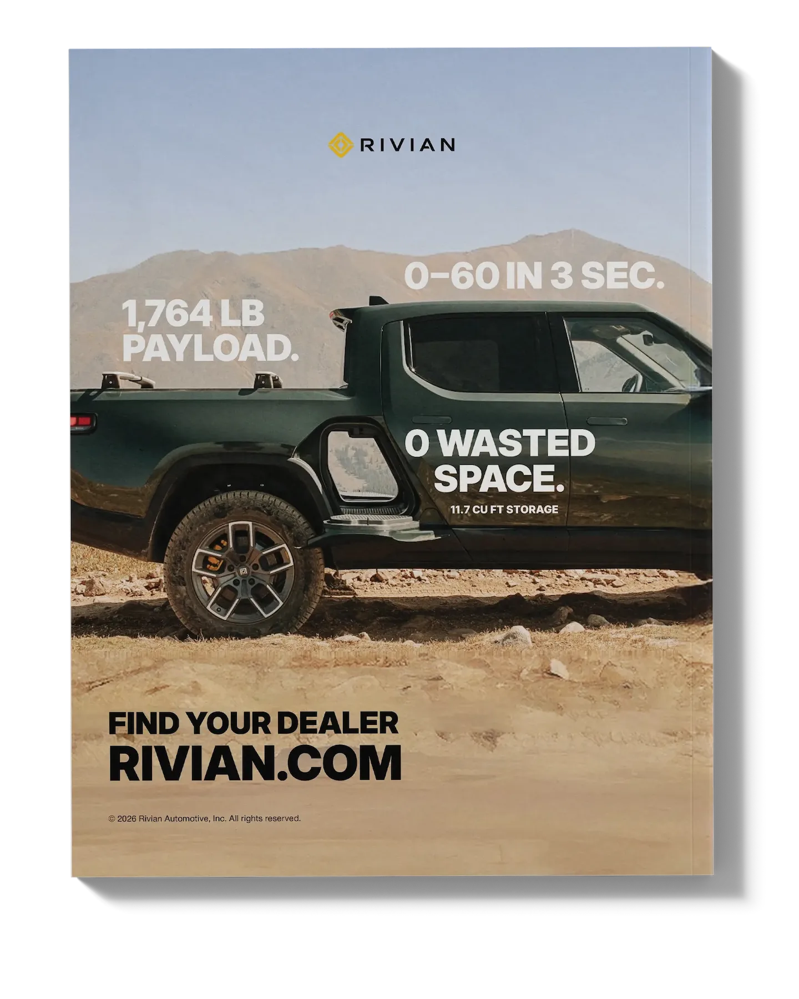
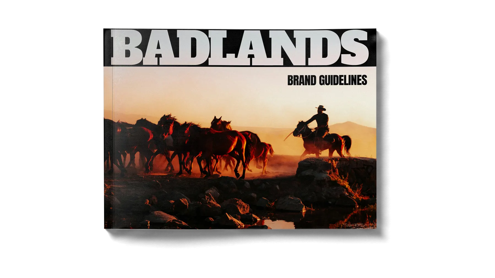
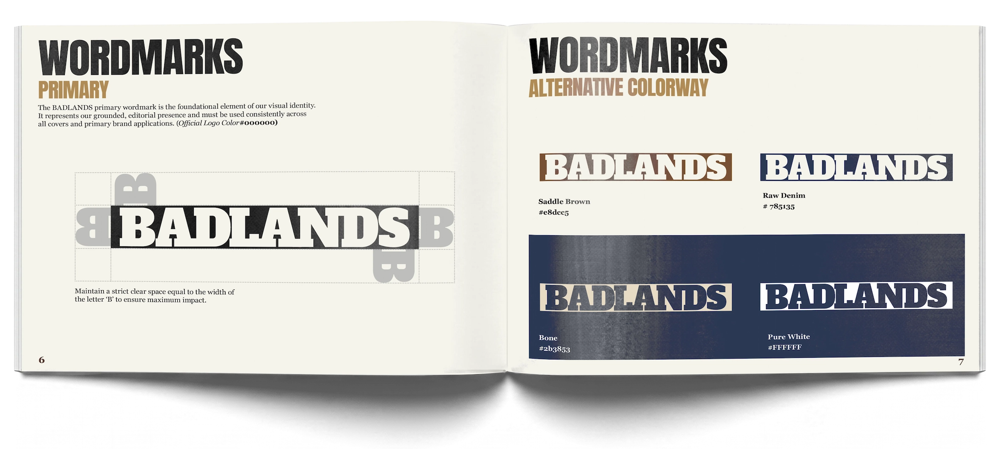
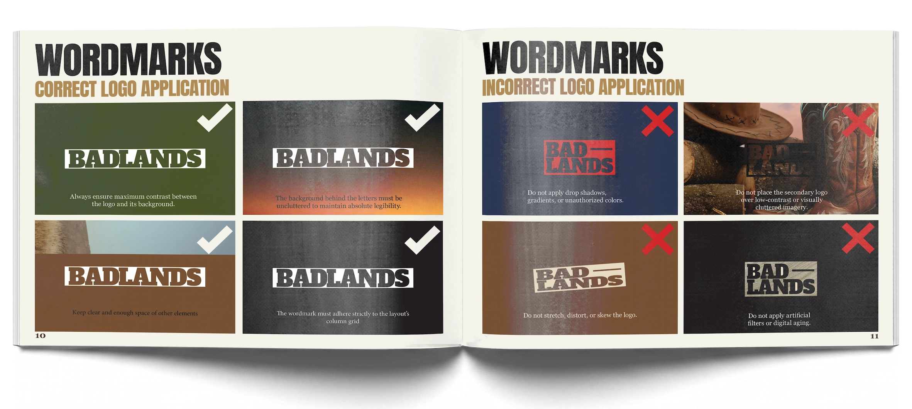
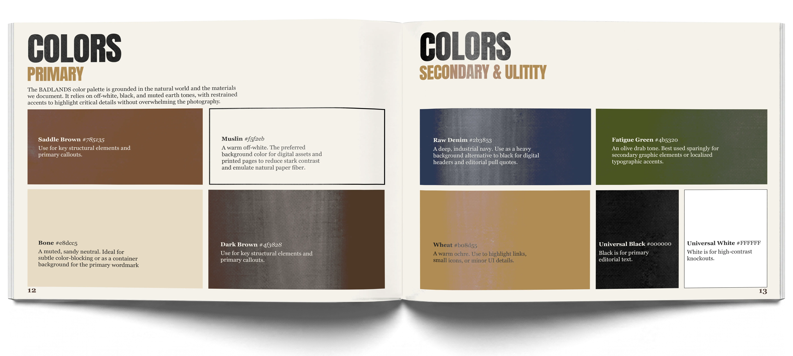
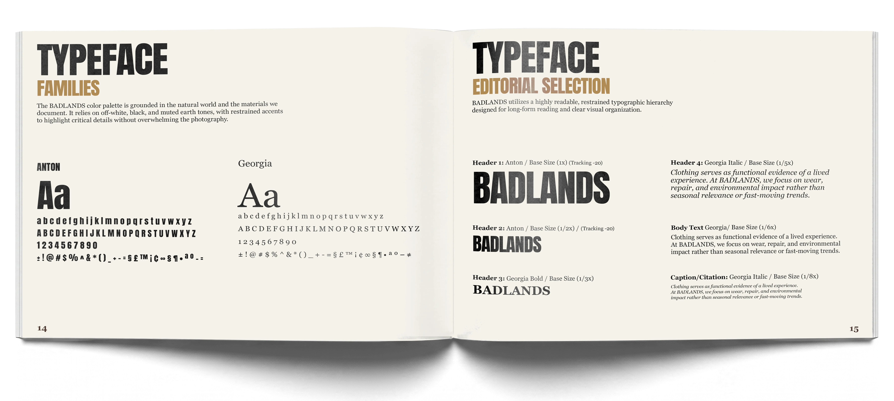
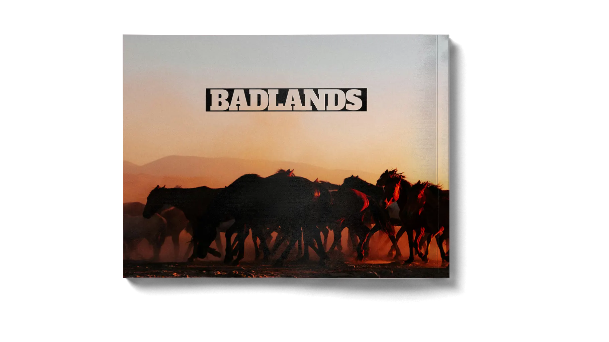
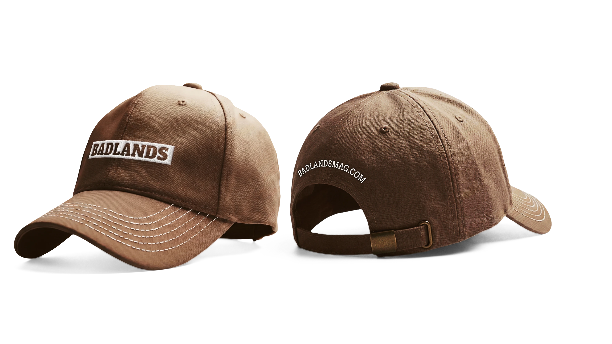
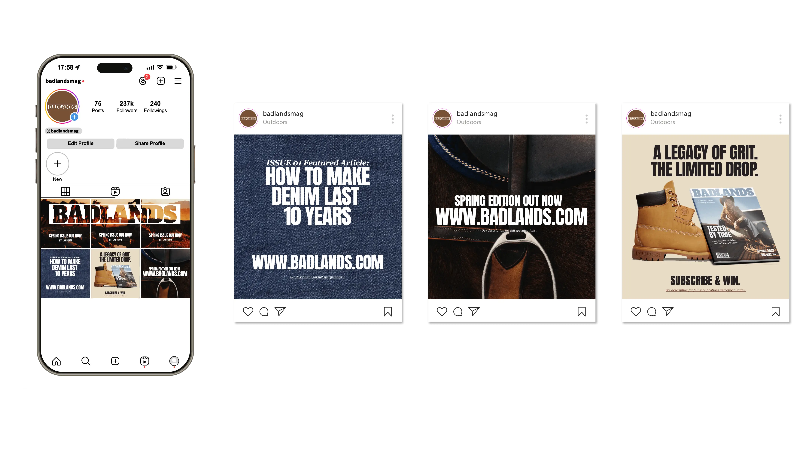